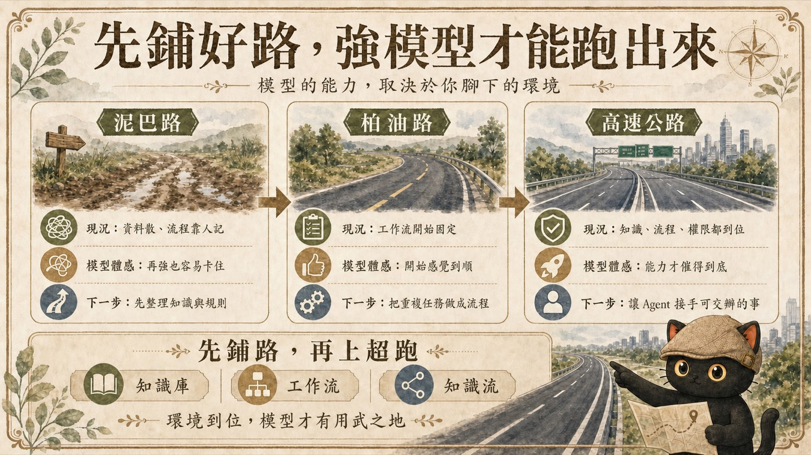

泥巴路
資料散、版本混亂、流程靠人記。AI 每次都要重新理解背景，長任務很容易卡住。
為什麼 Claude Fable、GPT-5.6 Sol 這類強模型出現後，有人一路狂飆，有人仍然覺得沒差。

當 Claude Fable 與 GPT-5.6 Sol 這類新一代強模型出現，很多人第一個問題都是：現在要不要升級？會不會已經來不及？我會先看另一件事。你的知識庫、工作流與知識流，已經整理到哪裡？同一台超跑放在不同路面，開起來完全是兩回事。
Anthropic 的 Claude Fable 與 OpenAI 的 GPT-5.6 Sol，能力路線與提供方式各有不同。兩者的共同點，是模型開始能處理更長、更複雜的知識工作、研究與工具操作。
當模型能力繼續提高，使用者原本準備好的文件、規則與工作流，也會更直接影響最後的使用體感。同樣拿到一台強模型，有人可以把它接進長任務，有人仍然只能用來單次問答。
官方資訊：Claude Fable 5 ↗ OpenAI GPT-5.6 ↗
汽車剛發明的時候，速度與可靠度未必立刻超過馬車。有人只看到眼前的比較，也有人開始看見另一個可能：車子會繼續進步，道路也會跟著改變。
當道路仍是泥巴與碎石，慢一點的車與快一點的車，體感差異有限。當路面變成柏油路，車子的穩定性與速度開始被看見。等到高速公路出現，超跑才真正有空間發揮。
資料散、版本混亂、流程靠人記。AI 每次都要重新理解背景，長任務很容易卡住。
文件集中、範本固定、輸入與輸出清楚。AI 不必每次從零理解你。
資料、知識、規則、權限、驗收與回寫接成一條能連續運作的路。
泥巴路仍然可以使用 AI。一般問答、單次改稿、摘要整理，依然能做得很快。問題出現在任務開始變長、資料開始變多、判斷開始變複雜的時候。
這時候，模型只能在鬆動的地面上猜路。模型變強，確實能多猜對一些。缺少資料、規則與目標時，它還是沒有足夠的東西可以運用。
柏油路的關鍵，是讓 AI 不用每次從零理解你。
每個專案有固定資料夾，重要資料能找到最新版本。
每一類工作有範本、步驟或檢查清單。
AI 知道輸入在哪裡、輸出放哪裡、哪一步需要人工確認。
到了這一層，文章、簡報、會議整理與研究報告開始能形成穩定工作流。模型升級後，也更容易感受到差異，因為任務已經有清楚路線。
AI 知道去哪裡取得事實與素材。
AI 看得到過去做過什麼，以及判斷的理由。
AI 知道哪些能自己做，哪些一定要停下確認。
任務有明確輸入、步驟、輸出與交接方式。
做完能檢查檔案、格式、連結、數字與狀態。
新的判斷與教訓會寫回知識庫或規則庫。
這些結構接起來之後，AI 才有機會從回答問題，走向接手一段工作。
我從 2024 年開始使用 Obsidian，後來一路整理到駕馭工程與迴圈工程。這段過程讓我愈來愈確定一件事：工具可以更換，自己的文件要持續累積。
如果文件採用 Markdown、純文字、CSV 等通用格式，搬家成本通常比較低。換一套 AI、換一個 Agent、換一個筆記工具，原本整理好的內容仍然能繼續使用。
事實、素材、經驗與判斷，也用資料夾、命名與連結留下結構。
規則寫清楚邊界，流程寫清楚怎麼開始、完成與驗收。
文章、會議、簡報、社群回收或專案報告。重複發生，才值得鋪路。
確認事實從哪裡來、最新版本是哪一份、做完要回到哪裡。
寫下專案目標、受眾、常用詞、禁用詞、資料位置與完成樣貌。
再補人工確認點、紅線與可被檢查的驗收方式。
觀察 AI 在哪裡誤解、漏資料、做錯順序，先不要急著全自動。
把偏差補進說明、字典、流程或驗收清單，讓下一輪更順。
這就是我說的迴圈工程：輸入、執行、驗收、修正、記錄，再進入下一輪。每一輪都讓道路更平一點。
請幫我盤點這項工作，判斷目前比較像泥巴路、柏油路，還是高速公路。 工作名稱：［填寫］ 目前使用的文件與資料來源：［填寫］ 目前做法：［填寫］ 完成後要交付的成果：［填寫］ 請依序完成： 1. 找出資料來源不明、版本混亂與缺少背景的地方。 2. 找出只存在我腦中、還沒有寫成文件的判斷與步驟。 3. 把工作整理成輸入、步驟、輸出、人工確認點、驗收方式。 4. 建議最少需要新增或整理哪些文件。 5. 列出第一輪先交給 AI 做的部分，以及暫時保留人工處理的部分。 6. 最後給我一份七天內可以完成的最小鋪路清單。 不要直接幫我做完整自動化。先把現況、缺口與最小下一步講清楚。
整理環境可以減少模型猜測，讓任務更穩、更容易重複，也更容易換工具。它不會保證每一次輸出都正確。
道路鋪好之後，人依然要決定目的地、交通規則與什麼時候踩煞車。
更強的模型值得期待。模型進步之後，我們可以交出去的工作確實會變多。
真正能長期累積的，是自己的文件、知識、規則與工作流。當腳下還是泥巴路，先整理一件會重複的工作。當柏油路已經鋪好，就把人工確認點與驗收方式補上。當知識、流程、權限與回寫都接起來，再讓更強的 Agent 接手更長的任務。
隱性知識提煉師、AI 應用規劃師。持續整理 AI × 知識管理、駕馭工程與迴圈工程的實戰方法。
如果你想把自己的知識整理成 AI 幫得上忙的系統，可以先從我的知識架構開始。
每個月兩場免費講座，分享實戰經驗與方法論。
點我加入 LINE 社群 ↗